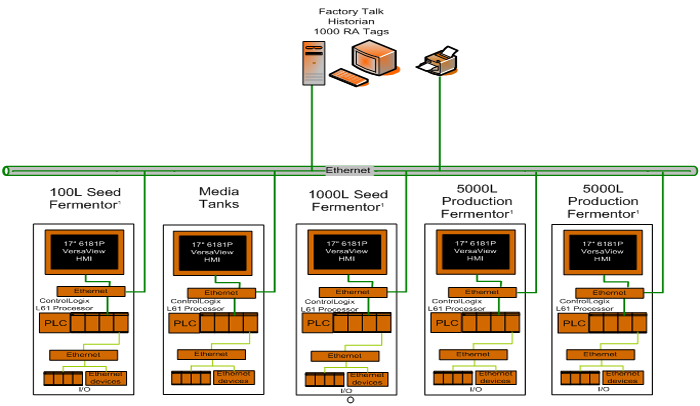
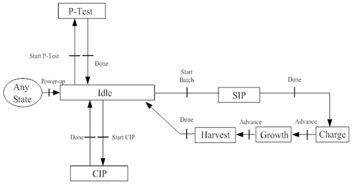
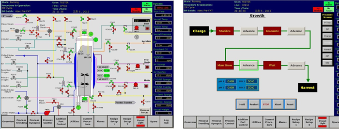

您所在的位置：技术服务>>自动化解决方案>>生物反应/发酵系统
我们根据客户的生物反应/发酵的工艺特性，制定相应的控制方案来满足客户需求，我们的服务内容包括：
- 根据客户的生物反应/发酵工艺，设计和优化自控系统方案
- 按照规范编写系统配置，控制功能等相关技术文档
- 系统集成和程序编写
- 系统调试，安装
- 提供GAMP验证服务
如图所示一个典型的生物发酵自控系统配置图：

系统由种子罐，主发酵罐，介质罐和其他一些辅助罐子构成。每一个罐子配有单独的PLC控制，并通过以太网相互通讯，通过上位机进行数据采集和数据处理，如批次报表等。每一个发酵罐的常规流程包括：
1.P-Test 压力测试
2.CIP 清洗
3.SIP清洗
4.Charge进料
5.Growth成长
6.Harvest收获等
其操作流程如下图所示:

下图一个HMI的画面配置的一个实例，采用的是Rockwell的RSView32人机界面。
